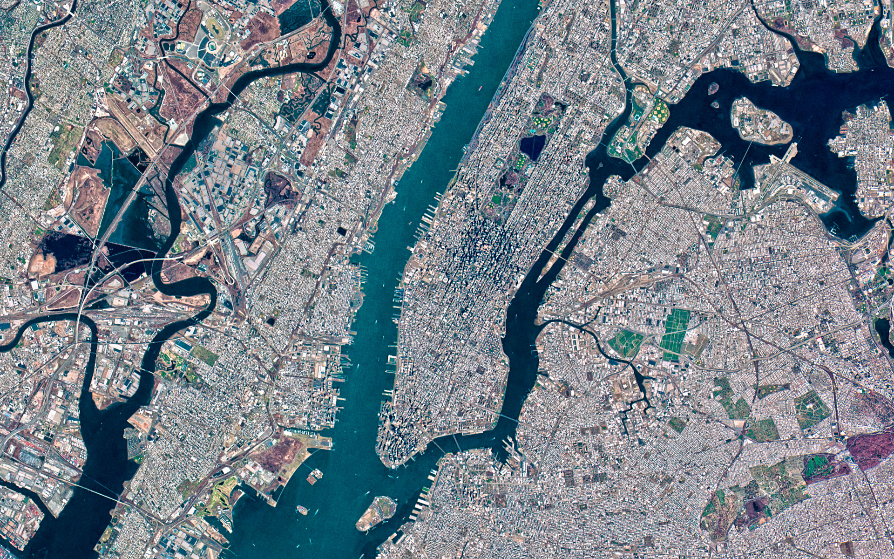
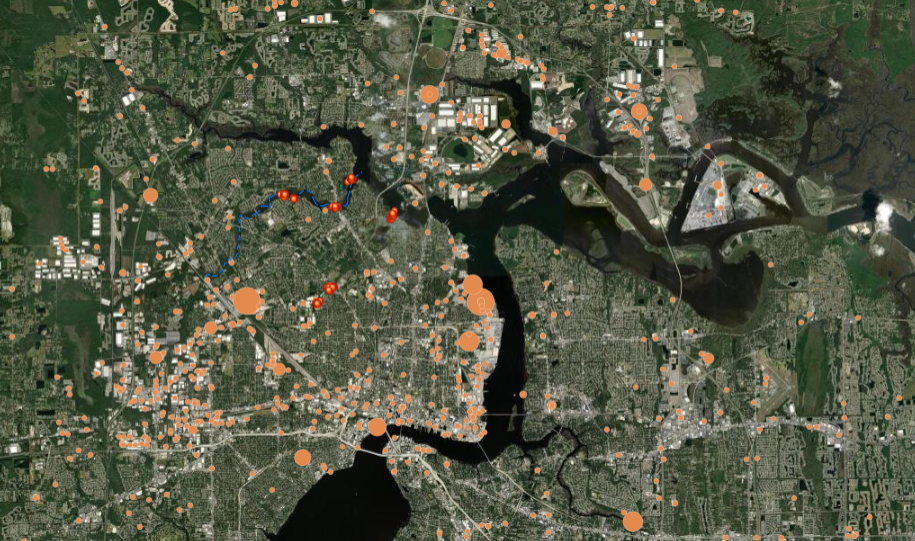

Diomedes Research develops open, reusable investigative frameworks and datasets that enable the verification of funded infrastructure and public-facing systems. Our goal is to reduce the technical barriers to investigative work and expand access to verifiable, data-driven accountability.
All case files are derived exclusively from publicly available records and structured for research, regulatory, and journalistic use.
Documented unpermitted wastewater discharge into stormwater systems using geospatial analysis and FDEP database review.
Mapped an interconnected network of corporate entities sharing addresses and registered agents using Sunbiz and NPI registries.
Analyzed IRS 990 filings and state lobbying disclosures to identify model legislation patterns across jurisdictions.
Longitudinal review of FDEP enforcement and site-level satellite imagery regarding operational compliance history.
A jurisdiction-standardized dataset of all individuals on death row across 27 states and the federal system is maintained as part of our public records infrastructure.

All tools are released under AGPL licensing. All findings are published openly. No one pays us to find out what their government is doing. That is the point.
DIOMEDES does not advocate. DIOMEDES does not lobby. DIOMEDES does not tell anyone what to do with what it finds. DIOMEDES follows the records. Regulators, courts, and the public decide what comes next.
Community tips are how investigations start. If you have witnessed financial fraud or environmental pollution and it can be corroborated through public records, reach out.